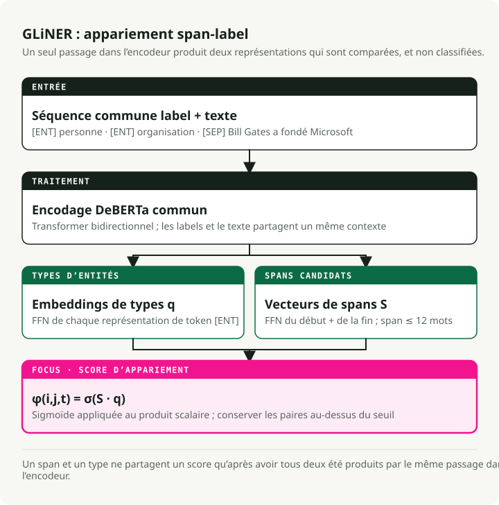
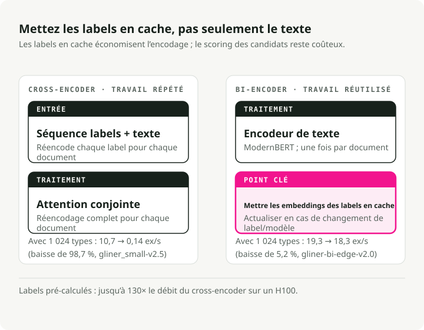
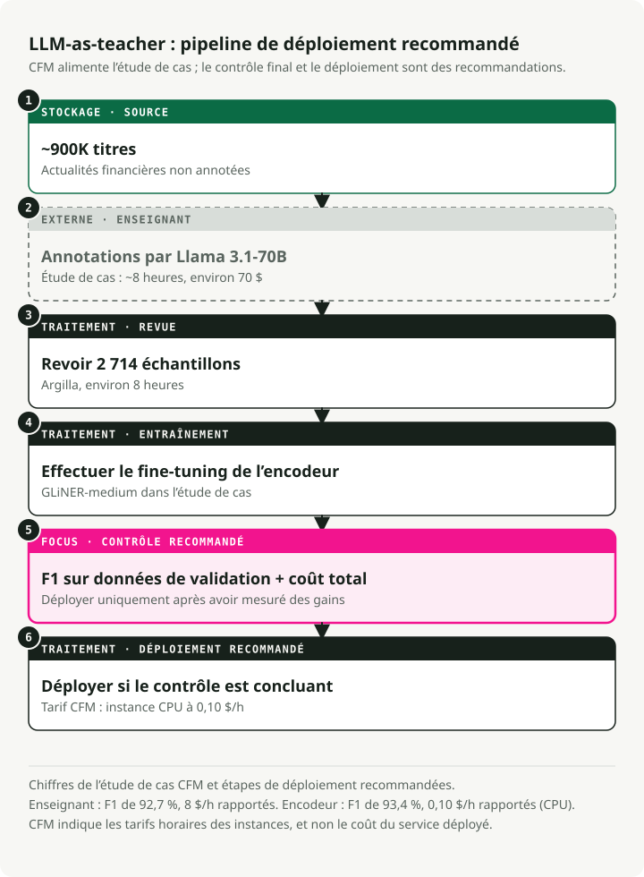
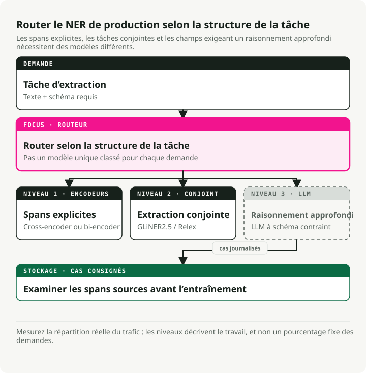

Traduction automatique
Cet article a été traduit automatiquement depuis la version originale en anglais.
Le guide ultime sur le NER en 2026 : encodeurs, LLM et architecture de production à 3 niveaux
Il y a deux ans, choisir une approche de NER signifiait opter entre vitesse (modèles d’encodeur) et précision (LLM). Ce compromis n’existe plus aujourd’hui. Un modèle GLiNER doté de 300 millions de paramètres atteint une précision sans entraînement équivalente à celle d’un UniNER de 13 milliards de paramètres, tout en étant 100 fois plus rapide. Une version plus récente de l’encodeur binaire permet de gérer des millions de types d’entités, avec un avantage de productivité 130 fois supérieur par rapport à l’encodeur croisé original. Le schéma de déploiement qui s’est imposé consiste à utiliser des LLM pour annoter les données, à affiner des encodeurs compacts, puis à les déployer via ONNX ou Rust.
J’ai créé le dépôt associé et j’ai comparé chaque approche majeure. Les encodeurs ont conquis le marché du NER en environnement de production. Les LLM restent essentiels, mais ils servent désormais principalement à générer des données d’entraînement plutôt qu’à effectuer des inférences. Ce guide présente les articles scientifiques, les benchmarks et les schémas de déploiement à l’origine de ce changement de tendance.
Dépôt associé : Guide de champ NER — Des démos exécutables pour GLiNER, l’export en ONNX, le pipeline LLM-as-teacher, ainsi que l’extraction structurée avec Instructor.
En résumé : il n’est plus nécessaire de développer des modèles NER à partir de zéro. Pour l’extraction sans entraînement préalable, GLiNER sur CPU via ONNX surpasse même les derniers LLM à un coût quasi nul. Pour les tâches spécifiques à un domaine, le pipeline LLM en tant qu’enseignant (étiquetage par l’LLM → revue → affinement) permet d’obtenir des encodeurs atteignant un F1 de 90-93 % ou plus. Dans les cas nécessitant du raisonnement, utilisez Instructor ou Outlines avec une API d’LLM — mais prévoyez un budget de 2 $ par 1 000 documents. L’architecture à 3 niveaux combine ces trois approches.
Pourquoi le NER est encore plus important aujourd’hui : les agents, RAG et l’intelligence documentaire
NER signifie toujours la même chose : identifier des segments nommés dans un texte et les classifier. Ce qui a changé, c’est son emplacement au sein des pipelines d’NLP. Auparavant, il s’agissait de l’étape finale, une fonction utilitaire discrète dont personne ne rédigeait de billets de blog. Aujourd’hui, il constitue un élément de base au sein des systèmes RAG, des boucles d’agents et des plateformes de traitement de documents. C’est pourquoi l’onde de recherche en NER pour la période 2024-2026 revêt une importance qui dépasse les simples benchmarks académiques.
RAG : Une extraction d’entités améliorant la récupération des informations
Le RAG traditionnel — qui consiste à découper le texte, à le vectoriser, à effectuer une recherche par similarité et à espérer le meilleur — échoue lorsque les utilisateurs demandent des informations concernant des entités spécifiques. Si quelqu’un demande « Qu’a dit Anthropic au sujet de la sécurité des modèles au quatrième trimestre 2024 ? », le système doit reconnaître « Anthropic » et « Q4 2024 » comme des filtres, et non pas se fier uniquement à la similarité des embeddings.
Lors de l’indexation, vous extrayez les entités de chaque morceau de texte et les stockez en tant que métadonnées : {"organizations": ["Anthropic"], "dates": ["Q4 2024"], ...}. Cela vous permet de filtrer par entité avant d’exécuter une recherche vectorielle. Les graphes de connaissances RAG (GraphRAG, Graphes de propriétés LlamaIndex) vont encore plus loin : l’analyse sémantique nommée (NER) combinée à l’extraction de relations crée un graphe capable de répondre à des questions à plusieurs étapes, ce que les embeddings plats ne peuvent pas faire.
Lors de la phase de requête, les entités extraites de la question de l’utilisateur guident le routage. Une question mentionnant le nom d’une entreprise est dirigée vers un index financier ; celle qui mentionne des noms de médicaments est envoyée vers une base de connaissances clinique. GLiNER s’avère particulièrement adapté dans ce contexte, car les entités présentes dans les requêtes sont imprévisibles — il n’est pas possible de réentraîner le modèle pour chaque nouveau type d’entité que les utilisateurs pourraient demander.
Agents IA : Transformer du texte en faits structurés
Les agents reçoivent du texte non structuré — pages web, réponses API, messages d’utilisateurs — et doivent pouvoir agir sur celui-ci. Le NER transforme ce texte en faits structurés que l’agent peut utiliser pour raisonner, stocker ou transmettre à des outils.
Cela revêt une importance particulière en deux domaines.
Le premier est le routage vers les outils. Lorsqu’un utilisateur dit « planifier une réunion avec Sarah Chen d’Accenture jeudi à 14h », l’agent doit extraire PERSON: Sarah Chen, ORGANIZATION: Accenture, et DATETIME: Thursday 2pm avant d’appeler l’API de calendrier. Un modèle NER à encodeur effectue cette tâche en moins de 10 ms. Un LLM ajoute quant à lui 1 à 2 secondes par appel, et ce délai s’accumule au fil des workflows à plusieurs étapes, au point que même un agent censé être « instantané » ne le semble plus.
Le deuxième cas concerne le suivi des entités au cours des conversations. Les systèmes de mémoire des agents doivent pouvoir distinguer que « Sarah » dans l’étape 3 et « Mme Chen » dans l’étape 12 sont la même personne. Le NER identifie les segments de texte correspondants ; la liaison des entités les associe ensuite au même identifiant.
Dans les deux cas, la contrainte principale est la latence. Un appel NER de 200 ms au sein d’une chaîne d’actions composée de 10 étapes entraîne un retard perçu de 2 secondes. C’est pourquoi les modèles à encodeur, et non les méthodes d’extraction basées sur des LLM, constituent le choix idéal pour le traitement des entités au sein des boucles d’agents.
Intelligence documentaire : des images aux données structurées
L’OCR transforme les images en texte. Le NER transforme ce texte en champs structurés. Ensemble, ils permettent une numérisation de documents à grande échelle.
Le pipeline standard : exécuter l’OCR (Tesseract, Azure Document Intelligence, AWS Textract) afin d’obtenir le texte ainsi que les boîtes de délimitation, puis exécuter le NER pour extraire les champs structurés — invoice_number, vendor_name, line_items, total, due_date — à partir d’un JPEG d’une facture papier. La même approche fonctionne pour les contrats, les dossiers médicaux et les documents réglementaires.
Les plateformes modernes combinent trois étapes : la compréhension du layout (s’agit-il d’un en-tête ou d’une cellule de tableau ?), l’extraction des entités (de quel type est ce texte ?) et l’extraction des relations (quelles valeurs appartiennent ensemble ?). GLiNER 2 gère ces trois tâches en une seule passe ; une seule appelation du modèle peut restituer {vendor: "Acme Corp", amount: "\$4,200", due_date: "2026-04-15"} d’une facture.
C’est ici que le coût devient déterminant. Une firme de comptabilité de taille moyenne traite des dizaines de milliers de factures chaque mois. Faire passer chacune d’elles par un LLM, même un modèle économiquement efficient comme GPT-5.4 Nano, coûte des centaines de dollars par jour. En revanche, un modèle GLiNER affiné et exécuté sur CPU ne coûte que quelques centimes. Votre directeur financier remarquera certainement la différence. Le chemin : annoter 500 factures de référence à l’aide d’un LLM, affiner GLiNER sur les résultats obtenus, puis déployer le système sur une CPU au coût de 0,10 $/heure.
Détection des données PII et contrôles associés aux LLM
Les réglementations sur la protection des données (GDPR, HIPAA, CCPA) exigent que les données personnelles soient identifiées avant qu’elles n’atteignent les systèmes ultérieurs. Dans le cas des déploiements d’LLM, cela signifie scanner les entrées avant qu’elles ne soient traitées par le modèle, ainsi que les sorties avant qu’elles ne parviennent à l’utilisateur.
NER gère cela directement. Les modèles de dé-identification le détectent. PERSON, SSN, PHONE, EMAIL, ADDRESS Les segments concernés doivent soit être censurés, soit remplacés par des équivalents fictifs. Les modèles cliniques de John Snow Labs Il atteint un taux de 96 % F1 pour la détection de PHI (contre 91 % pour Azure, 83 % pour AWS et 79 % pour GPT-4o), tout en traitant plus de 100 000 notes cliniques par jour.
En ce qui concerne les garde-fous des LLM, le NER fonctionne comme une couche de pré-sélection : il analyse les entrées utilisateur à la recherche de PII avant de les envoyer à une API externe, afin de les bloquer ou de les anonymiser. Cette approche est plus rapide et plus simple que de demander au LLM de s’autoréguler. GLiNER est particulièrement utile dans ce contexte, car les catégories de PII varient selon les juridictions. Il est possible d’ajouter de nouveaux types d’entités, tels que « informations génétiques », en réponse à de nouvelles réglementations, sans avoir à réentraîner le modèle.
GLiNER redéfinit l’économie du NER grâce à un modèle de 300 millions de paramètres
GLiNER (NAACL 2024, Zaratiana et al.) a permis au NER basé sur des encodeurs de rivaliser avec les LLM à un coût bien inférieur. Plutôt que de considérer le NER comme une étiquetage de séquences ou une génération de texte, GLiNER le traite comme un problème de correspondance : il évalue chaque segment de texte candidat (chaque séquence continue de mots telle que « Bill Gates » ou « Microsoft ») par rapport à chaque étiquette de type d’entité, puis conserve uniquement les paires ayant obtenu de hauts scores.
Le modèle traite les étiquettes de type d’entité ainsi que le texte d’entrée comme une seule séquence : [ENT] person [ENT] organization [ENT] date [SEP] Bill Gates founded Microsoft.... Un transformateur bidirectionnel (DeBERTa-v3) encode tout ensemble.
À partir du résultat, le modèle génère deux ensembles de représentations : l’un pour les types d’entités (issues de [ENT] les positions des tokens) et un autre pour les intervalles de texte (obtenu en combinant les vecteurs de token de début et de fin au moyen d’un petit réseau FFN). Le produit scalaire entre la représentation de l’intervalle et celle du type d’entité donne une note.
En appliquant la fonction sigmoïde, on obtient la probabilité que l’intervalle allant du token \(i\) au token \(j\) appartienne au type d’entité \(t\) : \(\phi(i, j, t) = \sigma(S_{ij}^T \cdot q_t)\), où \(S_{ij}\) est le vecteur de l’intervalle généré par le FFN et \(q_t\) est l’embedding du type d’entité correspondant. [ENT] token (Zaratiana et al., 2024, Éq. 1). Les segments sont limités à 12 tokens afin de garantir des performances rapides.

En pratique, cela signifie que toute description en langue naturelle peut servir de étiquette au moment de l’inférence. Aucun réentraînement n’est nécessaire. Vous pouvez fournir les types d’entités que vous souhaitez (« personne », « réaction indésirable aux médicaments », « instrument financier »), et le modèle évalue les segments en fonction d’eux. Trois tailles sont disponibles : GLiNER-S (50 M de paramètres), GLiNER-M (90 M) et GLiNER-L (300 M). Les données d’entraînement proviennent du dataset Pile-NER : 44 889 passages contenant 240 K de segments d’entités appartenant à 13 K de types d’entités, tous étiquetés par ChatGPT. L’entraînement de GLiNER-L prend environ 4 heures sur une seule carte A100.Zaratiana et al., 2024). Zaratiana et al. (2024), Tableaux 1 et 2 :
| Modèle | Paramètres | F1 de CrossNER | Moyenne (20 ensembles de données) |
|---|---|---|---|
| GLiNER-L | 300 M | 60.9% | 47.8% |
| GoLLIE | 7B | 58.0% | -- |
| UniNER-13B | 13B | 55.6% | -- |
| GLiNER-M | 90 M | 55.4% | -- |
| UniNER-7B | 7B | 53.7% | 45.7% |
| GLiNER-S | 50 M | 52.7% | -- |
| ChatGPT (GPT-3.5) | -- | 47.5% | 36.5% |
GLiNER-M, avec 90 millions de paramètres, équivaut presque à UniNER-13B (55,4 % contre 55,6 % en F1), tout en étant 140 fois plus petit. Même la version légère GLiNER-S, dotée de 50 millions de paramètres, surpasse ChatGPT (GPT-3.5) de 5 points en F1. La variante multilingue – entraînée uniquement sur des données en anglais – bat ChatGPT dans 8 des 10 langues autres que l’anglais.Zaratiana et al., 2024). Remarque : les modèles LLM plus récents (GPT-5.4, Claude 4.6) obtiennent probablement de meilleurs résultats sur ces benchmarks, mais l’écart de coût ne cesse de s’aggraver — ces modèles restent des ordres de grandeur plus chers qu’un encodeur de 90 M sur CPU.
L’écosystème est vaste : plus de 280 modèles compatibles avec GLiNER sur HuggingFace, environ 350 000 téléchargements sur PyPI par mois, ainsi que près de 2 800 étoiles sur GitHub. Les variantes couvrent le texte biomédical, la détection de PII, les actualités et le soutien multilingue.
De quickstart.py:
from gliner import GLiNER
model = GLiNER.from_pretrained("urchade/gliner_medium-v2.1")
text = "Bill Gates founded Microsoft on April 4, 1975."
labels = ["person", "organization", "date"]
entities = model.predict_entities(text, labels, threshold=0.5)
for entity in entities:
print(f" {entity['text']} => {entity['label']} ({entity['score']:.3f})")
# Bill Gates => person (0.987)
# Microsoft => organization (0.991)
# April 4, 1975 => date (0.974)
Comment GLiNER se compare à spaCy
Tout guide sur le NER serait incomplet sans spaCy — Environ 21 millions de téléchargements par mois, et l’une des bibliothèques NLP les plus robustes en environnement de production. Cependant, elle traite un problème différent de celui de GLiNER.
les pipelines de spaCyen_core_web_sm, en_core_web_trf) effectuer une NER à vocabulaire fermé : un ensemble fixe de types d’entités (PERSON, ORG, GPE, DATE, etc.) défini au moment de l’entraînement. Souhaitez-vous un nouveau type d’entité ? Collectez des données étiquetées et réentraînez le modèle. Basé sur un transformateur en_core_web_trf hits 89,8 % de score F1 sur OntoNotes 5.0, mais uniquement pour ses 18 types prédéfinis.
GLiNER propose un NER à vocabulaire ouvert : n’importe quelle étiquette peut être utilisée au moment de l’inférence, sans nécessiter de réentraînement. Cela en fait le choix idéal lorsque les types d’entités ne sont pas connus à l’avance, changent fréquemment ou sont spécifiques à un domaine donné (« réaction indésirable aux médicaments », « instrument financier », « indicateur de menace »).
Ma recommandation : utilisez spaCy pour les types d’entités standards, où les pipelines préentraînés ont fait l’objet d’une validation approfondie. Préférez GLiNER lorsque vous avez besoin de types flexibles et sans réentraînement, ou lorsque votre pipeline doit s’adapter sans modification. Ces deux outils fonctionnent bien ensemble — spaCy gère la tokenisation et la segmentation des phrases, tandis que GLiNER s’occupe de l’extraction des entités.
UniNER et NuNER : Jusqu’à quel point peut-on aller ?
UniNER (ICLR 2024, Zhou et al.) et NuNER (EMNLP 2024, Bogdanov et al.) transforment toutes les annotations issues de grands modèles de langage en modèles NER plus petits — mais ils diffèrent quant à la taille minimale atteignable.
UniNER : La voie maximaliste
UniNER affine LLaMA-7B/13B à l’aide de 44 889 paires NER (240 K d’entités, 13 K de types) générées par ChatGPT. Pour chaque type d’entité, le modèle répond à la question « Qu’est-ce qui décrit [type] dans le texte ? » et produit des listes au format JSON. Une astuce clé de l’entraînement : l’échantillonnage négatif basé sur la fréquence permet d’améliorer le score F1 de 31,5 % à 53,4 %.Zhou et al., 2024).Zhou et al., 2024).
NuNER : La solution la plus sobre
NuNER part de RoBERTa-base (125 millions de paramètres) et utilise un entraînement par contraste avec 4,38 millions d’annotations GPT-3.5 couvrant 200 000 concepts — le coût total des annotations restant inférieur à 500 $. Une fois l’entraînement terminé, l’encodeur de concepts est supprimé ; l’encodeur de texte peut alors être intégré dans n’importe quel pipeline NER standard en remplacement de RoBERTa.Bogdanov et al., 2024).Bogdanov et al., 2024).
Les deux articles montrent la même chose : la distillation des annotations issues de modèles LLM en modèles plus petits permet d’obtenir des systèmes de NER supérieurs à celui de l’entraîneur initial. De plus, il n’est pas nécessaire d’utiliser 7 milliards de paramètres — 125 millions suffisent lorsqu’on dispose de données de fine-tuning, grâce à une licence MIT et à une inférence optimisée pour les processeurs CPU.
GLiNER 2 : Un modèle, quatre tâches
L’écosystème original GLiNER rencontrait un problème croissant : des modèles distincts pour le NER (GLiNER), l’extraction de relations (GLiREL), la classification (GLiClass) et l’RE au niveau du document (GLiDRE) — chacun nécessitant sa propre mise en œuvre, son conteneur Docker, son système de surveillance ainsi que des mécanismes de gestion des pannes. GLiNER 2 (EMNLP 2025, Zaratiana et al.) fusionne ces quatre composants en un seul modèle de 205 millions de paramètres doté d’une interface basée sur des schémas.
L’architecture conserve le design à base de cross-encoder, mais étend la capacité de traitement du contexte à 2 048 tokens (4 fois plus que l’original) et intègre des schémas déclaratifs permettant de définir les tâches d’extraction. L’entraînement s’appuie sur 135 698 documents réels annotés avec GPT-4o, ainsi que sur 118 636 exemples synthétiques.Zaratiana et al., 2025).Zaratiana et al., 2025).
from gliner2 import GLiNER2
extractor = GLiNER2.from_pretrained("fastino/gliner2-base-v1")
# Multi-task composition in ONE forward pass
schema = (extractor.create_schema()
.entities({"person": "Names of people", "company": "Organization names"})
.classification("sentiment", ["positive", "negative", "neutral"])
.relations(["works_for", "founded", "located_in"])
.structure("product_info")
.field("name", dtype="str")
.field("price", dtype="str"))
results = extractor.extract(text, schema)
Un déploiement de modèle remplace quatre anciens. Une infrastructure simplifiée, une précision compétitive.
Le bi-encodeur : Échelle vers le NER à des millions d’étiquettes
Le GLiNER original encode à la fois les étiquettes et le texte — ce qui crée un goulot d’étranglement. Plus il y a de types d’entités, plus la séquence d’entrée s’allonge, et les performances chutent rapidement au-delà d’environ 30 types. Le bi-encodeur GLiNER (février 2026, Stepanov et al. ; arXiv 2602.18487) résout ce problème en séparant l’encodage du texte de celui des étiquettes en deux transformateurs distincts.

L’encodeur de texte utilise ModernBERT (famille Ettin), tandis que l’encodeur d’étiquettes fait appel à des sentence transformers (BGE ou MiniLM). Les segments et les étiquettes sont évalués au moyen du produit scalaire. La astuce réside dans le fait que les embeddings des types d’entités peuvent être calculés une fois à l’avance et mémorisés. Lors de l’inférence, seul le texte doit être encodé — la recherche des étiquettes s’effectue en temps réel.Stepanov et al., 2026Tableau 1) :
| Modèle | Paramètres | F1 de CrossNER | Débit de traitement (H100) | Avec des étiquettes précalculées |
|---|---|---|---|---|
| bi-edge-v2.0 | 60 M | 54.0% | 13,64 ex/s | 24,62 ex/s |
| bi-small-v2.0 | 108 M | 57.2% | 7,99 ex/s | 15,22 ex/s |
| bi-base-v2.0 | 194 M | 60.3% | 5,91 ex/s | 9,51 ex/s |
| bi-large-v2.0 | 530 M | 61.5% | 2,68 ex/s | 3,60 ex/s |
Avec 1 024 types d’entités, l’encodeur binaire (à bord de la carte, précalculé) perd seulement 5,2 % de sa capacité de traitement par rapport à un seul étiquetage. L’encodeur croisé, quant à lui, voit sa capacité chuter de 98,7 % (de 10,7 à 0,14 ex/s). Cela représente donc un avantage de 130 fois en termes de performance à grande échelle. Sur une seule carte H100 disposant de 100 types d’entités, l’encodeur binaire génère 1,96 million de prédictions par jour, contre 368 K pour l’encodeur croisé.Stepanov et al., 2026).Stepanov et al., 2026).
from gliner import GLiNER
model = GLiNER.from_pretrained("knowledgator/gliner-bi-base-v2.0")
# Pre-compute embeddings for massive label sets — encode once, use forever
entity_types = ["person", "organization", "date"] # Can be thousands or millions
entity_embeddings = model.encode_labels(entity_types, batch_size=8)
# Inference only encodes text — labels are a cached lookup
outputs = model.batch_predict_with_embeds(texts, entity_embeddings, entity_types)
Les applications comprennent le NER biomédical basé sur l’ontologie UMLS (plus de 4 millions de concepts), des taxonomies d’entreprise qui évoluent sans réentraînement du modèle, ainsi que le lien d’entités grâce à l’outil associé. GLiNKER framework.
Les LLM en tant qu’enseignants : le pipeline à 70 $ qui surpasse le modèle à 8 $ de l’heure
Le modèle LLM en tant qu’enseignant constitue désormais une étape standard dans les pipelines de production. Trois études détaillent les coûts associés ainsi que les avantages obtenus.

Étude de cas CFM
Capital Fund Management a extrait les noms d’entreprises à partir d’environ 900 000 titres de nouvelles financières. Le modèle GLiNER en mode zero-shot a atteint un score F1 de 87,0 %. Ils ont utilisé Llama 3.1-70b (le modèle ouvert le plus performant de l’époque) pour annoter l’ensemble des données en environ 8 heures, pour un coût d’environ 70 $, puis ont fait examiner manuellement 2 714 échantillons via Argilla pendant une autre période de 8 heures.
Le retouche de GLiNER sur ces données a permis d’améliorer son performance à 93,4 % de F1 — dépassant même le score de 92,7 % du modèle de référence Llama 70b. Le modèle retouché fonctionne à un coût de 0,10 $/heure sur CPU, contre 8 $/heure pour le modèle de référence — soit 80 fois moins cher tout en offrant une précision supérieure.Étude de cas CFM). Aujourd’hui, vous pouvez obtenir des annotations d’enseignants encore plus performantes avec Llama 4 Maverick ou GPT-5.4 Mini, à un coût similaire ou inférieur.
L’étude Refuel AI
Refuel AI a évalué la capacité de marquage des LLM sur 8 ensembles de données NLP, dont CoNLL-2003. GPT-4 (mars 2023) a atteint 88,4 % de concordance avec les valeurs de référence — soit un résultat supérieur aux 86,2 % obtenus par des annotateurs humains qualifiés. Les LLM étaient 20 fois plus rapides et 7 fois moins chers. Leur approche d’assemblage — utilisation de modèles bon marché pour les exemples simples et de GPT-4 pour les cas complexes — a permis d’atteindre une concordance de 95 % ou plus, tout en maintenant des coûts faibles.Rapport technique sur le rechargement des modèles d’IA). Avec la disponibilité désormais assurée de GPT-5.4 et Claude 4.6, la qualité des modèles d’enseignement ne cesse de s’améliorer.
Tonic.ai Clinical NER
Tonic.ai a démontré que ce schéma fonctionne également pour le NER clinique. Seules les annotations générées par un LLM ont permis d’entraîner un modèle RoBERTa LoRA à un score F1 de 0,70 sur le NCBI Disease Corpus (contre 0,81 avec des étiquettes fournies par des humains). Pour l’extraction d’identifiants de santé, ce modèle a atteint un score F1 de 0,947 — supérieur au seuil opérationnel de 0,914 — sans aucune donnée étiquetée manuellement.
Le pipeline standard
La procédure de mise en production s’est structurée en six étapes :
- Rédiger des directives d’annotation en langage naturel
- Créer un petit ensemble de validation étiqueté par des humains (50–200 documents)
- Utiliser un LLM (GPT-5.4 Mini, Llama 4 Maverick ou Qwen3.5) pour étiqueter les données d’entraînement en masse
- Vérifier un sous-ensemble via Argile ou Label Studio
- Affiner un encodeur compact (GLiNER, SpanMarker, RoBERTa)
- Déployer avec un coût d’inférence 16 à 80 fois inférieur
Le coût du NER n’est plus lié à la nécessité d’« annoter l’ensemble de vos données d’entraînement en embauchant une armée d’étudiants de premier cycle ». Il s’agit plutôt de « créer un bon ensemble de validation, établir des directives claires, et laisser le LLM gérer le reste ».
Où GLiNER échoue et pourquoi les LLM restent essentiels
Le Test de référence Sease (Octobre 2025) : GLiNER a été testé contre GPT-4.1-mini sur 30 tâches de parsing de requêtes. GPT-4.1-mini a obtenu 100 % de résultats parfaitement corrects. GLiNER, quant à lui, n’a réussi que 53 % des tâches (16 sur 30). Cependant, GLiNER a répondu en 0,08 seconde, contre 1,21 seconde pour le LLM — soit 15 fois plus rapide.
GLiNER échoue dans trois schémas spécifiques :
- Entités implicites : extraction de « événement » à partir de « Elton John performed at Madison Square Garden » — aucun texte ne mentionne littéralement « événement », mais le LLM en déduit « concert ».
- Sensibilité de la formulation des étiquettes : « 2022 » obtient une note de 0,388 pour l’étiquette « date », mais de 0,958 pour « année » — de légères modifications des étiquettes entraînent des variations importantes des scores.
- Mappage des valeurs : GLiNER renvoie le texte brut exact (« family houses ») au lieu de la valeur canonique (« Single family house ») — les LLM font cela naturellement.
Entités imbriquées et superposées
GLiNER rencontre également des difficultés avec les entités imbriquées. Dans « New York University », un humain pourrait étiqueter à la fois « New York » (LOCALISATION) et « New York University » (ORGANISATION). GLiNER ne sélectionne que la plage ayant la note la plus élevée. Cela est crucial dans les textes biomédicaux (« acute myeloid leukemia » contient à la fois une maladie et un modificateur) ainsi que dans les textes juridiques (hiérarchies organisationnelles imbriquées). Les modèles spécialisés gèrent ce type d’imbriquement, mais la conception à plages plates de GLiNER ne le permet pas.
En pratique : GLiNER gère l’extraction d’entités explicites — qui constitue le cœur du NER en environnement de production. Les LLM interviennent lorsque l’extraction nécessite de l’inférence, du raisonnement ou un mappage vers des ontologies prédéfinies. Il convient donc d’utiliser les deux approches.
Évaluation du NER : métriques, pièges et création de jeux de test
J’ai vu des équipes déployer des modèles atteignant 95 % de F1 sur leur jeu de test, mais qui échouaient en production parce que ce dernier ne reflétait pas la répartition réelle des documents. Votre jeu de test n’est pas vos données de production. Ce mode de défaillance est suffisamment courant pour qu’il faille y prévoir des solutions.
Les métriques fondamentales
- F1 au niveau de l’entité : La métrique standard. Une prédiction est considérée comme correcte uniquement si les limites de l’intervalle et le type correspondent exactement à la vérité factuelle. C’est ce que rapportent la plupart des articles scientifiques.
- F1 au niveau du token : Évalue chaque token indépendamment. Elle gonfle les résultats car obtenir une grande partie d’une entité longue correctement permet d’obtenir un crédit partiel. Préférez la F1 au niveau de l’entité.
- Précision vs Rappel : Ces deux indicateurs présentent souvent des coûts asymétriques. Pour la dé-identification, le rappel est plus important — manquer un nom est pire que supprimer trop d’informations. Pour l’extraction de bases de données, la précision est plus cruciale — des entrées fausses corrompent les analyses ultérieures.
Pièges courants dans l’évaluation
- Gonflement des correspondances partielles : Extraction de « Bill » alors que l’étiquette de référence est « Bill Gates » — certains scripts considèrent cela comme une correspondance partielle. Utilisez une correspondance d’intervalle exacte sauf si vous avez une raison contraire.
- Confusion de type : « Microsoft » identifié correctement comme un intervalle mais étiqueté comme PERSON au lieu de ORG devrait obtenir zéro point. Vérifiez que votre code d’évaluation gère ce cas. 3 Fuite vers l’ensemble de test : Si les entités de test chevauchent celles d’entraînement, les scores sont gonflés. Des benchmarks sans entraînement préalable (CrossNER, Few-NERD) existent pour tester la généralisation.
Création d’un ensemble de test sectoriel
Pour une évaluation en environnement de production, je recommande :
- Échantillons issus de données en production, et non des exemples sélectionnés manuellement. Incluez les documents complexes que votre modèle verra réellement.
- 200 à 500 documents annotés permettent d’obtenir des estimations F1 stables. En dessous de 100, les intervalles de confiance sont trop larges.
- Au moins deux annotateurs, avec un accord entre eux (kappa de Cohen > 0,8). Si les humains ne s’accordent pas, votre modèle ne pourra pas faire mieux.
- Stratifiez par niveau de difficulté : cas simples (texte propre, types standards) et cas difficiles (entités ambiguës, jargon, texte bruité).
RÉTICULATION EN NER DANS QUATRE INDUSTRIES
Voici les déploiements de RÉTICULATION les plus matures que j’ai trouvés, accompagnés de chiffres précis.
Santé
Le secteur de la santé dispose des outils de RÉTICULATION les plus avancés. John Snow Labs propose plus de 2 500 modèles préentraînés, dont plus de 1 200 dédiés à la santé, couvrant plus de 400 types d’entités cliniques mappées sur ICD-10, SNOMED CT, LOINC et RxNorm. Leurs modèles de dé-identification atteint 96 % de F1 (contre 91 % pour Azure, 83 % pour AWS, 79 % pour GPT-4o), avec Providence St. Joseph Health traite quotidiennement de 100 000 à 500 000 d’notes cliniques..Le logiciel open source Projet OpenMed Il propose plus de 380 modèles de NER en biologie médicale, ayant été téléchargés 29,7 millions de fois sur HuggingFace, et établit ainsi un nouveau record de performance sur 10 des 12 benchmarks publics en biologie médicale.
NER financière
Le cas d’usage principal : l’extraction des données de déclaration auprès de la SEC. Finance NLP de John Snow Labs permet d’extraire plus de 11 types d’entités à partir des documents 10-K/10-Q (adresses, codes boursiers, exercices financiers, bourses de valeurs). FinBERT-MRC Les variantes atteignent un score F1 de 0,87 à 0,93 sur les tâches relatives aux entités financières. Le défi majeur réside dans les documents longs ainsi que dans les entités imbriquées présentes dans des instruments financiers complexes.
E-commerce
Reconnaissance sémantique des entités à grande échelle. Chez Walmart Système EAMT (КДД 2023) s’entraîne sur 965 millions de requêtes comportant environ 60 étiquettes d’entités, ce qui permet d’obtenir une augmentation du GMV de 0,51 % lors des tests A/B — soit des millions de revenus supplémentaires. Chez Home Depot, TripleLearn Le framework (AAAI 2021) a permis d’augmenter la valeur F1 du NER de 69,5 à 93,3 grâce à un entraînement itératif. Système iACE (CCS 2016) a traité 71 000 articles provenant de 45 blogs de sécurité, en extrayant 900 K d’éléments IOC avec une précision de 98 % et un taux de rappel de 93 %. Les systèmes modernes tels que CyNER combiner DeBERTa (F1 >91 %) avec des heuristiques IOC basées sur des expressions régulières. Le CyberNER Le dataset unifié (2025) fusionne quatre ensembles de données en 21 types d’entités conformes à STIX 2.1, le modèle RoBERTa atteignant un score F1 de 0,736.
GLiNER dispose d’une conversion native en ONNX, et des modèles déjà convertis sont disponibles sur HuggingFace.onnx-community/gliner_small-v2.1). ONNX Runtime offre une amélioration de vitesse de 1,5 à 3 fois par rapport à PyTorch sur CPU, avec quatre niveaux d’optimisation allant du basique au précision mixte. onnx_export.py:
# Export with quantization
# python convert_to_onnx.py --model_path model/ --save_path onnx/ --quantize True
# Load ONNX model — same API, faster inference
from gliner import GLiNER
model = GLiNER.from_pretrained("path/to/model", load_onnx_model=True)
# Same predict_entities call, 1.5-3x faster on CPU
entities = model.predict_entities(text, labels, threshold=0.5)
Quantification INT8
La quantification dynamique permet de réduire la taille des modèles de 2,4 fois (438 MB → 181 MB), avec une perte F1 inférieure à 0,6 %. La vitesse d’exécution s’améliore de 1,8 fois sur CPU. Sur les processeurs Intel VNNI utilisant ONNX Runtime, la quantification INT8 offre jusqu’à 6 fois plus de rapidité par rapport au format FP32 de PyTorch.
from onnxruntime.quantization import quantize_dynamic, QuantType
# One-line quantization — 2.4x smaller, <1% F1 loss
quantize_dynamic("gliner.onnx", "gliner_int8.onnx", weight_type=QuantType.QInt8)
gline-rs : Réimplémentation en Rust
gline-rs (Apache 2.0) élimine la surcharge liée à Python. Sur CPU : 6,67 séq./s contre 1,61 pour Python — soit une amélioration de performance de 4,1 fois. Sur une RTX 4080 : 248,75 séq./s.benchmarks gline-rs). Il prend en charge les modèles de type span et token, ainsi que les GPU/NPU via ONNX Runtime, et est disponible sous forme de crate sur crates.io.
use gliner::{GLiNER, TokenMode, Parameters, RuntimeParameters, TextInput};
let model = GLiNER::<TokenMode>::new(
Parameters::default(), RuntimeParameters::default(),
"tokenizer.json", "model.onnx")?;
let input = TextInput::from_str(
&["My name is James Bond."], &["person", "vehicle"])?;
let output = model.inference(input)?;
// => "James Bond" : "person" (99.7%)
The fast-gliner Le paquet fournit des bindings Python via PyO3 : la vitesse de Rust associée à l’ergonomie de Python.
Résumé de la pile d’optimisation
| Optimisation | Accélération vs PyTorch | Taille du modèle | F1 Impact | Idéal pour |
|---|---|---|---|---|
| ONNX Runtime | 1,5 à 3 fois | Identique | Aucun | Solution rapide, n’importe quel matériel |
| Quantification INT8 | 3 à 6 fois | 2,4 fois plus petit | Perte de 0,6 % | Déploiement sur CPU, avec contraintes de mémoire |
| 4,1x (CPU) | Format ONNX | Aucun | Haute performance, avec des exigences strictes en matière de latence | |
| gline-rs + format INT8 | 4 à 8 fois | 2,4 fois plus petit | perte de 1 % | Production à grande échelle |
Extraction structurée : instructeur versus plans de cours
Lorsque vous avez besoin d’une plus grande flexibilité que ne l’offrent les modèles d’encodeur — entités implicites, raisonnement, mappage ontologique — deux bibliothèques permettent d’effectuer une extraction structurée à partir des LLM.
Formateur Environ 12 600 étoiles sur GitHub et environ 8,8 M de téléchargements par mois en mars 2026), ce projet développé par Jason Liu permet de modifier les SDKs de modèles de langage grand public pour qu’ils prennent en charge des modèles de réponse Pydantic, avec une tentative automatique de réessai en cas d’échec de validation. Il prend en charge plus de 15 fournisseurs et a inspiré la fonctionnalité d’output structuré native d’OpenAI. structured_extraction.py:
import instructor
from pydantic import BaseModel
from typing import List, Literal
from openai import OpenAI
class Entity(BaseModel):
name: str
label: Literal["PERSON", "ORGANIZATION", "LOCATION"]
class ExtractEntities(BaseModel):
entities: List[Entity]
client = instructor.from_openai(OpenAI())
result = client.chat.completions.create(
model="gpt-5.4-mini", temperature=0.0,
response_model=ExtractEntities,
messages=[{"role": "user", "content": "BioNTech SE acquired InstaDeep in the U.K."}])
# entities=[Entity(name='BioNTech SE', label='ORGANIZATION'), ...]
Aperçus ~13 600 étoiles sur GitHub), dottxt adopte une approche différente : la génération de tokens contrainte à l’aide de machines à états finis. Au lieu de générer du contenu puis de tenter à nouveau en cas d’échec de validation, Outlines empêche la génération de tokens invalides dès le départ — conformité à 100 % au schéma, zéro tentative supplémentaire. Tests de performance AWS Affichez une adéquation au schéma de 98 % contre 76 % pour la validation post-génération, ainsi qu’une vitesse de génération 5 fois supérieure par rapport à la génération non contrainte accompagnée de tentatives de validation ultérieures.
import outlines
model = outlines.models.transformers("microsoft/Phi-3-mini-128k-instruct")
generator = outlines.generate.json(model, ExtractEntities)
result = generator("Extract entities from: BioNTech SE acquired InstaDeep in the U.K.")
Le choix dépend de l’endroit où vous exécutez vos modèles. Instructor est le plus adapté aux API de langage grand public en cloud : il permet un prototypage rapide, prend en charge plusieurs fournisseurs et utilise des patterns Pydantic familiers. Outlines s’avère préférable pour les modèles locaux lorsque vous avez besoin de garanties de format sans dépendances externes. Les deux solutions fonctionnent bien pour l’extraction de type NER, mais aucune ne rivalise avec la vitesse des encodeurs : Instructor ajoute une latence API de 200 ms à 2 s par appel, tandis que Outlines dépend de la vitesse du modèle local. Pour des applications NER à fort débit, les encodeurs restent 10 à 100 fois plus rapides.

Niveau 1 — Modèles d’encodage pour des types d’entités connus. GLiNER (encodeur croisé pour <30 types, encodeur binaire pour 30+ types), affiné grâce au pipeline LLM-as-teacher. Il peut être déployé sous forme de fichiers ONNX en format INT8 ou à l’aide de gline-rs. Ce modèle gère plus de 90 % du volume de données avec une latence inférieure à 50 ms et à un coût quasi nul. L’encodeur binaire permet d’atteindre des millions de types d’entités grâce à des embeddings précalculés.
Niveau 2 — GLiNER 2 pour l’extraction multi-tâches. Lorsqu’une requête nécessite à la fois l’NER, la classification, l’extraction de relations ainsi que la génération de données structurées, le modèle de 205 millions de paramètres de GLiNER 2 remplace quatre solutions distinctes. Il s’exécute sur processeur avec une latence comprise entre 130 et 208 ms, indépendamment du nombre d’étiquettes — ce qui est idéal pour les pipelines de documents exigeant plusieurs tâches d’extraction en une seule passe.
Niveau 3 — LLM pour l’extraction à forte composante de raisonnement. Lorsque les entités sont implicites, nécessitent une inférence contextuelle ou exigent un mappage ontologique, redirigez la tâche vers un LLM (GPT-5.4 Mini, Claude Sonnet 4.6, Llama 4 Maverick) via Instructor (cloud) ou Outlines (local). Cela permet de gérer ~10 % des requêtes que les encodeurs manquent. Ces mêmes LLM génèrent également des données d’entraînement pour le Niveau 1.
Quel en est le coût ? Un GLiNER affiné atteint un F1 de 93,4 % pour un coût de 0,10 $/heure sur CPU, ce qui équivaut au F1 de 92,7 % de son modèle enseignant Llama-70b à 8 $/heure — soit 80 fois moins cher.
Compromis et limites
Les systèmes d’apprentissage automatique présentent toujours des compromis. La question importante est de savoir où ces compromis apparaissent et s’ils peuvent être mesurés avant déploiement.
Les erreurs de l’LLM en tant que modèle enseignant se propagent. Si l’LLM commet systématiquement des erreurs sur un type d’entité spécifique (par exemple, confondre les noms de filiales avec ceux des sociétés mères), l’encodeur affiné hérite de ce biais. La solution consiste en une revue humaine ciblée : concentrez vos efforts sur les types d’entités pour lesquels la confiance de l’LLM est faible ou incohérente, plutôt qu’en effectuant un échantillonnage aléatoire.
Les pertes dues à la quantification ne sont pas uniformes. La perte moyenne de F1 due à l’INT8, estimée à ~0,6 %, peut être plus importante pour les types d’entités rares présentant des motifs de frontière subtils (composés chimiques, abréviations multilingues). Testez toujours les modèles quantifiés sur vos types d’entités spécifiques, et non en se basant uniquement sur une valeur F1 globale.
Lorsque l’architecture à 3 niveaux est un excès. Un seul domaine, des types d’entités bien définis, plus de 500 exemples étiquetés ? Un modèle RoBERTa ou un pipeline spaCy affiné suffit, car c’est plus simple. Le schéma à 3 niveaux s’avère utile uniquement dans les cas suivants : (a) plusieurs domaines, (b) des types d’entités en évolution constante, ou (c) une combinaison de tâches d’extraction faciles et difficiles. Si vous ne faites que récupérer des noms et des dates à partir de factures, le premier niveau seul est suffisant.
Le plafond de qualité des bi-encodeurs. Les bi-encodeurs sacrifient l’attention conjointe au profit d’une grande capacité de traitement. Lorsque la sémantique des étiquettes interagit avec le contexte textuel (« date », « année » ou « période » pour la même portion de texte), le cross-encodeur reste supérieur. Utilisez le cross-encodeur pour les tâches critiques où le nombre d’étiquettes est faible ; utilisez les bi-encodeurs pour obtenir une plus grande couverture.
Points clés
- Les encodeurs ont gagné. Les variantes GLiNER et bi-encodeur surpassent les LLM sur les benchmarks standards de NER à un coût 80-130 fois inférieur. Même avec la baisse des prix due au GPT-5.4 Nano et au Llama 4, il n’est plus justifié d’exécuter un LLM pour chaque requête de NER.
- Les LLM sont essentiels — en tant qu’enseignants. Ils étiquettent les données d’entraînement pour 70 $, ce qui coûterait des milliers de dollars en annotation humaine, et l’encodeur affiné finit généralement par surpasser le LLM qui l’a formé.
- Le bi-encodeur permet une échelle de millions d’étiquettes. Les embeddings précalculés résolvent le problème de complexité quadratique, avec seulement une perte de productivité de 5,2 % à 1 024 étiquettes.
- GLiNER 2 consolide l’extraction multi-tâche. Un seul modèle de 205 M pour la NER + la classification + la RE + l’extraction structurée.
- Évaluez sur vos données. Utilisez le F1 au niveau des entités, créez des ensembles de test à partir de documents en production, et comparez les modèles quantifiés selon vos types d’entités spécifiques.
- Utilisez le schéma hybride. Niveau 1/2 pour une extraction rapide, niveau 3 pour le raisonnement. Les mêmes LLM qui traitent les 10 % de cas les plus difficiles génèrent les données d’entraînement pour les 90 % restants.
Références
Articles scientifiques
- GLiNER : Modèle généraliste pour la reconnaissance d’entités nommées utilisant des transformateurs bidirectionnels - Zaratiana et al., NAACL 2024. L’architecture fondatrice de correspondance entre segments et entités. GLiNER 2 : Problèmes ouverts en matière d’extraction automatique d’informations - Zaratiana et al., EMNLP 2025 System Demonstrations. Unifie le NER, la classification, la RE et l’extraction structurée. GLiNER Bi-Encoder : Reconnaissance d’entités nommées scalable grâce à une architecture bi-encodeur - Stepanov et al., février 2026. Encodage découplé pour des échelles de millions d’étiquettes. UniNER : reconnaissance sémantique universelle basée sur des grands modèles de langage - Zhou et al., ICLR 2024. RÉTENTION D’ENTRETIEN UNIVERSELLE basée sur des LLM grâce à la distillation à partir de ChatGPT. NuNER : Pré-entraînement de l’encodeur de reconnaissance d’entités à l’aide de données annotées par des LLM - Bogdanov et al., EMNLP 2024. Il montre que 125 millions de paramètres suffisent avec des données d’entraînement générées par un LLM.
Articles sectoriels
- EAMT : Apprentissage multi-tâche conscient des entités pour la compréhension des requêtes - Walmart, KDD 2023 : 965 millions de requêtes, une augmentation du GMV de 0,51 %. TripleLearn : RNNER bout en bout pour la recherche en e-commerce - Home Depot, AAAI 2021. De 69,5 à 93,3 pour F1. iACE : Collecte automatique d’informations sur les menaces cybernétiques - CCS 2016 : 71 000 articles, 900 000 IOCs. CyberNER : Un corpus STIX harmonisé pour le SIE en cybersécurité - 21 types d’entités conformes à STIX 2.1. FinBERT-MRC : RÉ pour les données financières par compréhension de lecture automatique - Un score F1 compris entre 0,87 et 0,93 pour les tâches relatives aux entités financières.
Études de cas
- Étude de cas CFM : Ajustement fin de GLiNER pour le NER financier - Le pipeline de marquage des LLM de Capital Fund Management, d’une valeur de 70 $, atteint un score F1 de 93,4 %. Refuel AI : Rapport technique sur l’étiquetage des modèles LLM - GPT-4 atteint un taux d’accord dans les annotations de 88,4 %, dépassant ainsi les annotateurs humains. Sease : GLiNER comme alternative aux LLM pour l’analyse des requêtes - Les cas où GLiNER échoue et où les LLM restent nécessaires. John Snow Labs : Benchmark de dé-identification de textes médicaux - Comparaison de la détection du PHI F1 à 96 % entre les différents fournisseurs. OpenMed : Bilan annuel 2025 - Plus de 380 modèles de reconnaissance sémantique en biologie médicale, 29,7 millions de téléchargements sur HuggingFace.
Outils et frameworks
- repo de démonstration de ner-field-guide - Démos complémentaires pour cet article : démarrage rapide de GLiNER, export vers ONNX, utilisation d’un LLM en tant qu’enseignant, et extraction structurée. gline-rs : réimplémentation en Rust de GLiNER - Accélération de 4,1 fois par rapport à Python, sous licence Apache 2.0. Formateur - Extraction structurée de modèles LLM à l’aide de modèles Pydantic, ~8,8 millions de téléchargements par mois. Aperçus - Génération de tokens contrainte au moyen de FSM, garantissant le respect du schéma. AWS : Sortie structurée avec des sous-titres - Benchmark de conformité au schéma : 98 %.